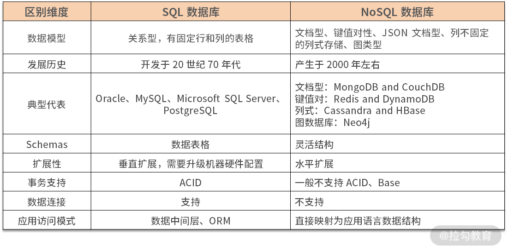

- 00 开篇词 吃透分布式数据库，提升职场竞争力.md.html
- 01 导论：什么是分布式数据库？聊聊它的前世今生.md.html
- 02 SQL vs NoSQL：一次搞清楚五花八门的“SQL”.md.html
- 03 数据分片：如何存储超大规模的数据？.md.html
- 04 数据复制：如何保证数据在分布式场景下的高可用？.md.html
- 05 一致性与 CAP 模型：为什么需要分布式一致性？.md.html
- 06 实践：设计一个最简单的分布式数据库.md.html
- 07 概要：什么是存储引擎，为什么需要了解它？.md.html
- 08 分布式索引：如何在集群中快速定位数据？.md.html
- 09 日志型存储：为什么选择它作为底层存储？.md.html
- 10 事务处理与恢复（上）：数据库崩溃后如何保证数据不丢失？.md.html
- 11 事务处理与恢复（下）：如何控制并发事务？.md.html
- 12 引擎拓展：解读当前流行的分布式存储引擎.md.html
- 13 概要：分布式系统都要解决哪些问题？.md.html
- 14 错误侦测：如何保证分布式系统稳定？.md.html
- 15 领导选举：如何在分布式系统内安全地协调操作？.md.html
- 16 再谈一致性：除了 CAP 之外的一致性模型还有哪些？.md.html
- 17 数据可靠传播：反熵理论如何帮助数据库可靠工作？.md.html
- 18 分布式事务（上）：除了 XA，还有哪些原子提交算法吗？.md.html
- 19 分布式事务（下）：Spanner 与 Calvin 的巅峰对决.md.html
- 20 共识算法：一次性说清楚 Paxos、Raft 等算法的区别.md.html
- 21 知识串讲：如何取得性能和可扩展性的平衡？.md.html
- 22 发展与局限：传统数据库在分布式领域的探索.md.html
- 23 数据库中间件：传统数据库向分布式数据库的过渡.md.html
- 24 现状解读：分布式数据库的最新发展情况.md.html
- 加餐1 概念解析：云原生、HTAP、图与内存数据库.md.html
- 加餐2 数据库选型：我们该用什么分布式数据库？.md.html
02 SQL vs NoSQL：一次搞清楚五花八门的“SQL”
这一讲我们开始讨论有关 SQL 及其变种的前世今生，以及它与分布式数据库之间的纷繁复杂关系。
21 世纪的开发者往往要面对一种窘境：需在众多的数据库中艰难地做出选择。他们其实也想如老一辈技术人一样闭着眼睛去选择 Oracle 或者 DB2，因为它们曾经被证明是“不会出错”的选择，即无论选择哪款数据库，都不会丢工作。
而时至今日，时代变了，我们如果不了解各种数据库内部的机理，即使选择大厂的成熟产品也有可能掉进“坑”里。因此，选择合适的数据库就成了日常工作中一项必备技能。
当然数据库的分类有各种各样的维度，在过去的 20 年中有一种分类法被广泛采用：SQL（关系型数据库）VS NoSQL（其他类型数据库）。随着时间的推移，又出现了一些新物种，如 NewSQL、DistributedSQL 等。从它们的名字上看，这些数据库都与 SQL 产生了羁绊，那么 SQL 在其中承担了什么角色呢？
这里先抛出结论：SQL 是所有数据库的“核心”，即使它们声称对 SQL 说“No”。怎么理解呢？现在让我们沿着数据库发展的脉络来解释并逐步验证这个观点。
SQL 的黄金年代
先抛出一个简单的定义：SQL 数据库就是一种支持 SQL 的数据库，它是一种用于查询和处理关系数据库中“数据”的特定领域语言。关系数据库中的“关系”是指由 IBM 研究人员 E.F. Codd 在 20 世纪 70 年代初设计的数据管理的“关系模型”，并在 System R 及后续许多数据库系统中得到了普及。
那么 SQL 与关系型数据库有哪些优缺点呢？
先来谈谈优点：由于 Schema（模式）的预定义，数据库获得存储相对紧凑，从而导致其性能较为优异；之后就是经典的 ACID 给业务带来了可控性，而基于标准化 SQL 的数据访问模式给企业级应用带来了更多的红利，因为“标准即是生产力”。
它的缺点是：对前期设计要求高，因为后期修改 Schema 往往需要停机，没有考虑分布式场景，在扩展性和可用性层面缺乏支持；而分布式是 21 世纪应用必备的技能，请你留意此处，这就是区分新老数据库的重要切入点。
自 20 世纪 70 年代末以来，SQL 和关系型数据库一直是行业标准。大多数流行的“企业”系统都是 System R 的直接后代，继承了 SQL 作为其查询语言。SQL 的意义是提供了一套结构化数据的访问标准，它是脱离特定厂商束缚的客观标准，虽然不同数据库都会对标准 SQL 进行扩充和改造，但是最为常用的部分还是与最初设计保持一致。
随着 SQL 的发展，它被广泛使用在各种商业、开源数据库中。长期的生产实践与其本身优秀的设计产生了美妙的化学作用，从而生发出如下两个现象。
1. 群众基础优秀
由于 SQL 被广泛地使用，于是形成了一类可以熟练使用该技术的人群，该人群数量众多，其中不仅包含了研发技术人员，一些其他行业人员，如财务、物流和数据分析等，都以掌握 SQL 作为从业必备技能。所以说 SQL 的群众基础相当深厚。
2. 应用生态丰富
SQL 客观上并不利于程序开发，这是由于应用系统需要编写大量的原始代码与 SQL 系统进行交互，从而形成了一个客观上存在的数据访问层，该层增加了系统复杂度，对维护造成了负面的影响。
针对这个问题，应用系统内往往会引入抽象层来屏蔽其数据访问层的复杂度，从而使业务研发人员能够更轻松地使用 SQL 类数据库。从数据访问框架、ORM，到数据库中间件，一大波该类技术组件频频进入人们的视野，从而构建出了极为丰富的生态。
以上两点相互作用，共同打造了 SQL 与关系型数据库的黄金年代。在其巅峰时期，几乎所有类型的应用都需要与数据库打交道，甚至有人戏称这是“面向数据库编程”。但随着互联网的悄然崛起，情况慢慢地发生了变化。
NoSQL 破土而出
NoSQL 数据库大概是在 2009 年被开发出来的，是一种非关系型数据库。它专注于分布式场景下数据存储与查询，不需要预先定义 Schema，一般不支持连接且易于扩展。开发人员通常被允许频繁地在线更改 Schema，从而更容易地实现业务需求。
NoSQL 数据库因具有庞大的数据存储需求，常被用于大数据和 C 端互联网应用。例如，Twitter、Facebook、阿里和腾讯这样的公司，每天都利用其收集几十甚至上百 TB 的用户数据。
那么 NoSQL 数据库与 SQL 数据库的区别表现在哪呢？如下表所示。
表 NoSQL 数据库与 SQL 数据库的区别

NoSQL 除了不是 SQL 外，另外一个广泛的解释是 Not Only SQL。其背后暗含：我们没有 SQL，但是有一项比 SQL 要吸引人的东西，那就是——分布式。
在 NoSQL 出现之前的商业数据库，多节点部署的难度很大且费用高昂，甚至需要使用专用的硬件。虽然理论上规模应该足够大，但其实不然。而后出现的 NoSQL，大部分在设计层面天然考虑了使用廉价硬件进行系统扩容，同时由于其放弃了 ACID，性能才没有随着系统规模的扩大而衰减。
当然 NoSQL 的缺点也比较明显：由于缺乏 ACID，应用时需要非常小心地处理数据一致性问题；同时由于其数据模型往往只针对特定场景，一般不能使用一种 NoSQL 数据库来完成整个应用的构建，导致设计层面的复杂和维护的困难。
当我们审视 NoSQL 数据库时，会发现一个有趣的事实：它们之间最大的共同点，其实是没有任何共同点，而“No”就成为它们的最大公约数。从而我有理由怀疑，NoSQL 本质上是一个为了做宣传而创造的概念——它将一种新鲜的事物打造为一个反传统、反权威的形象，从而达到宣传的目的。
由此，NoSQL 的概念大于其内涵，虽然招致了很多批评的声音，但其意义却也是重大的。我认为主要体现在以下 3 个方面。
第一，打破了固有思维
有许多应用其实使用数据库是非常烦琐的，比如互联网场景下的社交应用，它要处理大量非结构化场景。该场景其实可以使用关系型数据库实现，但却需要设计高扩展性的应用来支撑该场景，同时需要有丰富经验的 DBA 来配合，基于这两点才能使系统稳定运行。
使用 MongoDB 可以很好地解决场景问题，简化研发，在一定数量级的访问下，可以实现平滑的系统扩展，减少运维压力。这给当年资金有限的互联网公司，特别是创业公司带来了新的选择。同时也能看到，并不是任何系统都要面向关系型数据库、面向 SQL。可以说 NoSQL 一举打破了整个行业的桎梏，让技术回归人性，回归了本心。
第二，打破了大公司的垄断
当时整个行业都在诸如 Oracle、IBM 等大型数据库服务商的控制之下，大部分商业场景都可以看到它们的身影。而新兴互联网行业以解决实际问题出发，心中的束缚少，步子可以迈得大。通过反复试错和迭代，NoSQL 门类中有多种数据库得到了验证，从而在真实的商业场景中发挥了作用。
这种趋势在一定程度上打破了垄断，使行业生机勃勃，更加倒逼大型数据库服务商加快了前进的脚步，从而获得一个多赢的结果。
第三，将分布式引入到数据库中
从那之后，分布式数据库的概念开始流行，甚至整个技术圈都无法回避“分布式数据”这一理念，进而催生出我们后续要介绍的 NewSQL 等类型。
NoSQL 作为一个宣传手段，向我们揭示了那一代创新数据存储的窘境：它们其实与 SQL 相去甚远，但不得不与其发生深刻的关系。从而证明了我一开始给出的论断：NoSQL 数据库们的唯一核心与共同点其实就是 SQL。
但近十年来，随着 NoSQL 的发展，其中部分数据库已经摆脱了 SQL 的阴影，如 Elasticsearch、Redis 等。谈到它们的时候，人们往往不会将其与 NoSQL 概念联系起来，显然，它们已经得到了时间的认可，最终为自己正名。
NewSQL 的进击
人们常常批评 NoSQL“为了倒掉洗澡水，却把婴儿一起冲进了下水道”（Throwing the baby out with the bathwater）。SQL 类数据库应用如此广泛，为了分布式特性就需要抛弃 SQL 显得非常得不偿失。
因此一些组织开始构建基于 SQL 的分布式数据库，从表面看它们都支持 SQL，但是根据实现方式，其发展出了两种路线：NewSQL 和 Distributed SQL。这一讲我先介绍前者。
NewSQL 是基于 NoSQL 模式构建的分布式数据库，它通常采用现有的 SQL 类关系型数据库为底层存储或自研引擎，并在此之上加入分布式系统，从而对终端用户屏蔽了分布式管理的细节。Citus 和 Vitess 就是此种类型的两个著名案例，在后面的第四个模块中，我会具体介绍。
此外，一些数据库中间件，如 MyCAT、Apache ShardingShpere，由于其完全暴露了底层的关系型数据库，因此不能将它们称为 NewSQL 数据库，不过可以作为此种模式的另类代表。
大概在 2010 年年初的时候，人们尝试构建此类数据库。而后，451 ResEArch 的 Matthew Aslett 于 2011 年创造了“NewSQL”这个术语，用于对这些新的“可扩展” SQL 数据库进行定义。
NewSQL 数据库一般有两种。
第一种是在一个个独立运行的 SQL 数据库实例之上提供了一个自动数据分片管理层。例如，Vitess 使用了 MySQL，而 Citus 使用 PostgreSQL。由于每个独立实例仍然是单机关系型数据库，因此一些关键特性无法得到完美支持，如本地故障转移 / 修复，以及跨越分片的分布式事务等。更糟糕的是，甚至一些单机数据库的功能也无法进行使用，如 Vitess 只能支持子查询的一个“子集”。
第二种包括 NuoDB、VoltDB 和 Clustrix 等，它们构建了新的分布式存储引擎，虽然仍有或多或少的功能阉割，但可以给用户一个完整的 SQL 数据库体验。
NewSQL 数据库最初构建的目的是解决分布式场景下，写入 SQL 数据库所面临的挑战。它可以使用多个传统单机 SQL 数据库作为其存储节点，在此基础上构建起可扩展的分布式数据库。在它产生的年代，云技术还处于起步阶段，因此这类 NewSQL 得到了一定程度的发展。但是，随着多可用区、多区域和多云的云部署成为现代应用程序的标准，这些数据库也开始力不从心起来。
与此同时，像 Google Spanner 和 TiDB 这样的 Distributed SQL 数据库的崛起，NewSQL 数据库的地位就受到了进一步挑战。因为后者是被设计利用云组价的特性，并适应在不可靠基础设施中稳定运行的“云原生”数据库。
可以看到 NewSQL 回归了以 SQL 为核心的状态，这次回归展示了 SQL 的魅力，即可以穿越数十年时光。但这次革命是不彻底的，我们可以看到传统单机数据库的身影，还有对 SQL 功能的阉割。而革命者本身也往往来自应用领域，而不是专业数据库机构。所以NewSQL 更像是用户侧的狂欢，它可以解决一类问题，但并不完备，需要小心地评估和使用。
Distributed SQL 的崛起
上面我也提到过 Distributed SQL 数据库，此种使用的是特殊的底层存储引擎，来构建水平可伸缩的数据库。它在 NewSQL 的功能基础上，往往提供的是“地理分布”功能，用户可以跨可用区、区域甚至在全球范围内分布数据。CockroachDB、Google的Spanner、OceanBase 和 PingCAP 的 TiDB 就是很好的例子，这些引擎通常比 NewSQL 的目标更高。
但需要强调的是，NoSQL 和 NewSQL 是建立在一个假设上，即构建一个完备功能的分布式数据库代价是高昂的，需要进行某种妥协。而商用 Distributed SQL 数据库的目标恰恰是要以合理的成本构建这样一种数据库，可以看到它们的理念是针锋相对的。
相比于典型的 NewSQL，一个 Distributed SQL 数据库看起来更像一个完整的解决方案。它的功能一般包括可扩展性、数据一致性、高可用性、地理级分布和 SQL 支持，它们并非一些工具的组合。一个合格的 Distributed SQL 数据库应该不需要额外工具的支持，就可以实现上述功能。
此外，由于 Distributed SQL 天然适合与云计算相结合，因此一些云原生数据库也可以归为此门类，如 AWS 的 Aurora 等。不论是云还是非云数据库，Distributed SQL 几乎都是商业数据库，而 NewSQL 由于其工具的本质，其中开源类型的数据库占有不小的比重。
这一方面反映了 Distributed SQL 非常有潜力且具有商业价值，同时也从一个侧面说明了它才是黄金年代 SQL 关系型数据库最为正统的传承者。
新一代的 SQL 已经冉冉升起，它来自旧时代。但除了 SQL 这一个面孔外，其内部依然发生了翻天覆地的改变。不过这正是 SQL 的魅力：穿越时光，依然为数据库的核心，也是数据库经典理论为数不多的遗产。
总结
这一讲到这里就告一段落了，我们一起回顾了数据库与 SQL 的前世今生，了解了当今分布式数据库与 SQL 之间的关系，搞清楚了这些纷繁复杂的 SQL 蕴含的意义。
SQL 是在 20 世纪 70 年代被关系型数据库所引入，在随后的几十年里一直被看作是数据库标准的查询接口，从而形成了深厚的群众基础。而后 2000 年左右出现的 NoSQL 潮流，本质上与 SQL 没有实际联系，但讽刺的是，它们不得不依靠 SQL 这个“对手”来定义自身的价值，从而使我们感叹 SQL 那顽强的生命力。又随着近十年 NewSQL 和 Distributed SQL 的发展，SQL 回归本源，从旧时代的霸主摇身变为新时代的先锋。
SQL 在这漫长的时间内当然不是一成不变的，甚至可以说当今 SQL 已经与最早版本天差地别。但其核心理念未有异化，所以我们还是称其为 SQL 而不是给它新的名字。
那么通过这一讲的回顾，我们确信，任何成功的数据库都需要与 SQL 产生天然联系，而 SQL 美妙的设计，也将帮助新一代的分布式数据库乘风破浪。
教学相长
学习完这一讲的内容，我希望你思考这样一个问题：MySQL 8.0 引入的 InnoDB Cluster 应该被归类到哪种类型的分布式数据库呢？